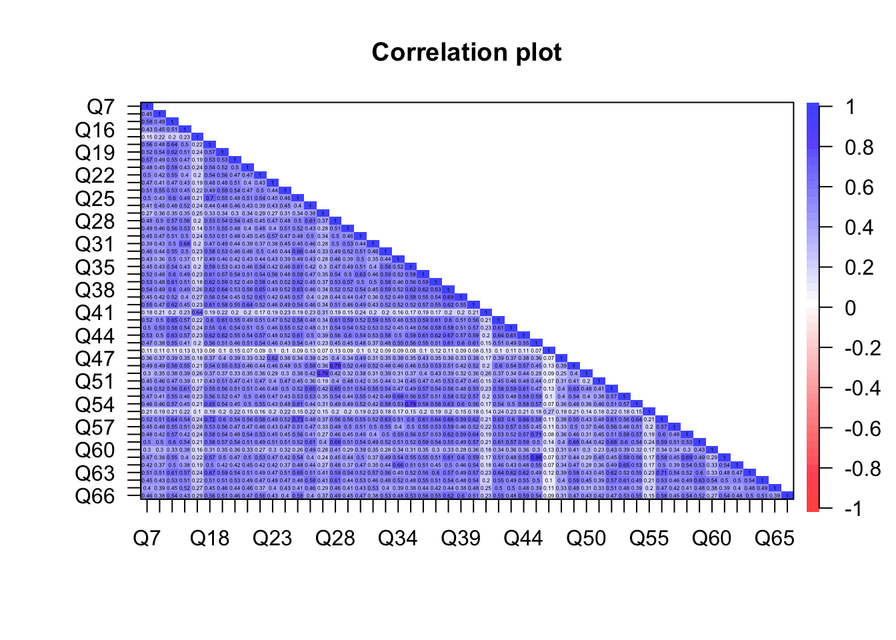
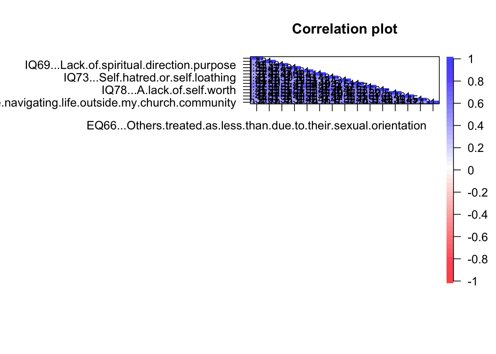
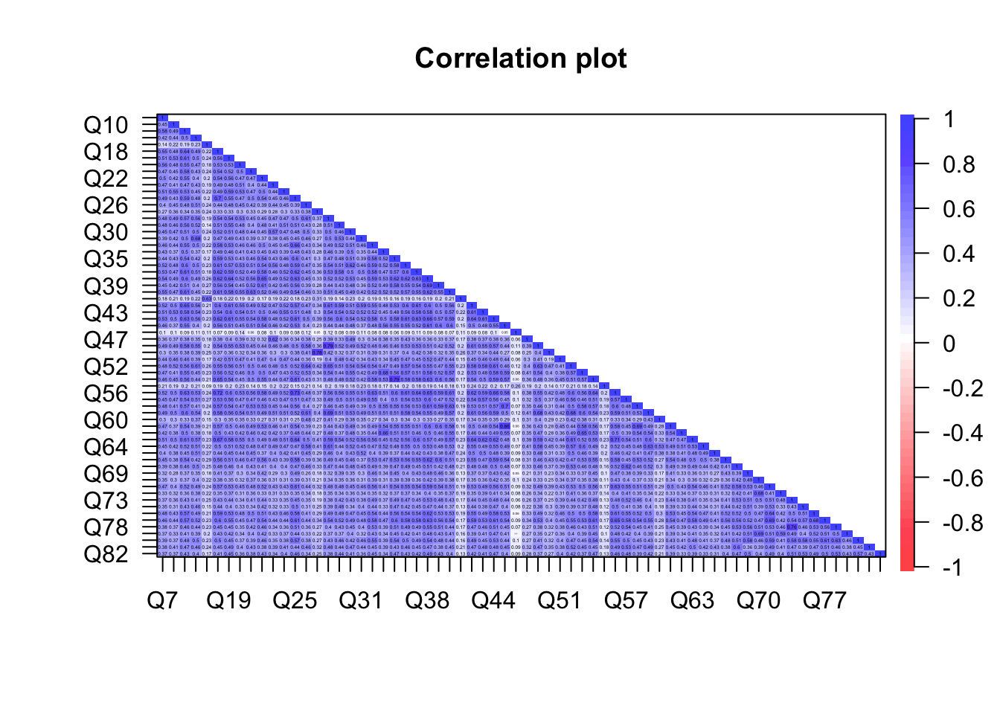

Reliability
In this chapter, we addresses the reliability of the SHAS based on the 66 piloted items. We begin by defining reliability and discussing its importance. Then we report the results of our analyses of the reliability of the piloted SHAS items from both classical test theory (CTT) and item response theory (IRT) frameworks. Since these are cross-sectional data taken at one point in time, our work is limited to internal consistency reliability which focuses on the relationships between the items at one point in time rather than relationships between items or scores between two or more time points. We conclude by considering what this information contributes to improved SHAS instrumentation.
About reliability
Reliability is the extent to which items and their scores are consistently measuring the trait of interest. It is evidence that two examinees who provide the same responses to the same items, and by extension receive the same total scores, truly have the same level or amount of, or exposure to, the trait.
Reliability in Classical Test Theory (CTT)
One way to think about reliability in classical test theory is the ratio of signal to noise in the observed data. Do the various item responses and scores provide a true sort of examinees on the trait, or is all this variation merely noise?
The foundation of internal consistency reliability in CTT is relationships between item responses: correlations. Strong correlations among the items are evidence that the items are measuring the same construct. Thus we begin by examining correlation matrices.
# HEATMAP OF CORRELATIONS
psych::corPlot(ext_items_l, upper = FALSE)
Figure 3: Correlation Matrix of External Events Items
Figure 3 is a correlation matrix of the External Events items for the 3,174 examinees who responded to all of these items. Each cell reports the correlation coefficient between scores of the two items. All of the cells are color coded to the scale of correlations which range from 0 (indicating no relationship) to 1 (indicating a perfect linear relationship). The cells along the diagonal are all 1.0 because they represent the correlation of the item with itself. Only one half of the matrix is necessary to report all the correlations among all the items.
The plot offers several interesting pieces of information. The first is that Q17–“Being treated as ‘less than’ because of my sexual orientation–does not quite fit. Responses to this item correlate weakly with responses to all the other items. It is possible that so few examinees experience this event that the responses vary very little, which would attenuate any correlation. Or it may be measuring something different than what the other items in this set. Similar could be said of Q27–”Being denied opportunities to serve/volunteer because of my gender.”
# HEATMAP OF CORRELATIONS
psych::corPlot(int_items_l, upper = FALSE)
Figure 4: Correlation Matrix of Internal States Items
Figure 4 is a correlation matrix of the Internal States items for the 3,051 examinees who responded to all of these items. This plot is interesting in that most of the correlations are in the moderate (0.50) range. They are sorting examinees in a similar way, but together they do not measure exactly the same thing.
# HEATMAP OF CORRELATIONS
psych::corPlot(items_l, upper = FALSE)
Figure 5: Correlation Matrix of All 66 Likert SHAS Items
This final matrix, Figure 5, reports the correlations among all of the Likert items among the 2,979 examinees who responded to all 66 items. Note that missing data are a challenge here, as these plots require complete data.
This plot offers several interesting insights. First, the preponderance of blue indicates that everything is positively correlated. This makes some sense because the items were worded and all the response categories were coded in the same direction.
Second, in this plot there are too many items and correlation coefficients in one place to be distinguishable, but with the colors it is possible to see an overall pattern. This plot orders the items by their order on the questionnaire so we can see how the External Events items correlate with the Internal Events items: moderately. It is possible that these are not two different scales.
Finally, we see at a glance a handful of items that correlate very weakly with all the other items. These items should be scrutinized for refinement and possible omission from the analysis.
Cronbach’s coefficient alpha. Arguably the most well-known statistic for estimating internal consistency reliability is Cronbach’s coefficient alpha (citation). This is a measure of the average inter-item correlation (?). It is also a measure of the ratio of signal to noise (X = T + e). A ballpark cutoff value is 0.70 (Nunnally and Bernstein 1994).
# CRONBACH'S ALPHA
reliability(items) # , itemal = TRUE, NA.Delete = TRUE, ml = TRUE)
Number of Items
66
Number of Examinees
2979
Coefficient Alpha
0.981 This output is not pretty, but it does report a Cronbach’s alpha of 0.98. This is a high level of internal consistency reliability.
Reliability in Item Response Theory (IRT)
Wright and Masters (1982) developed reliability measures based on the Rasch measurement model, which have a different concept from classical test theory (e.g., Cronbach’s alpha). Reliability is estimated both for persons and items, by means of Person Separation Reliability (PSR). This is an estimate of how well this instrument can distinguish respondents on the measured variable. In parallel, Item Separation Reliability (ISR) is an indication of how well items are separated by the persons taking the test (Wright & Stone, 1999). The cutoff of separation reliabilities is > 0.80 (Bond & Fox, 2015).